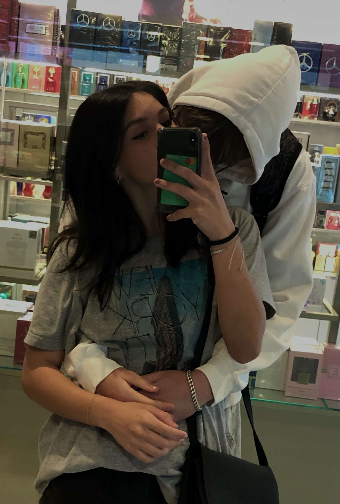
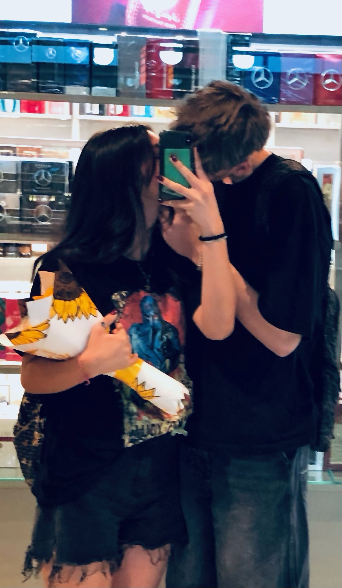
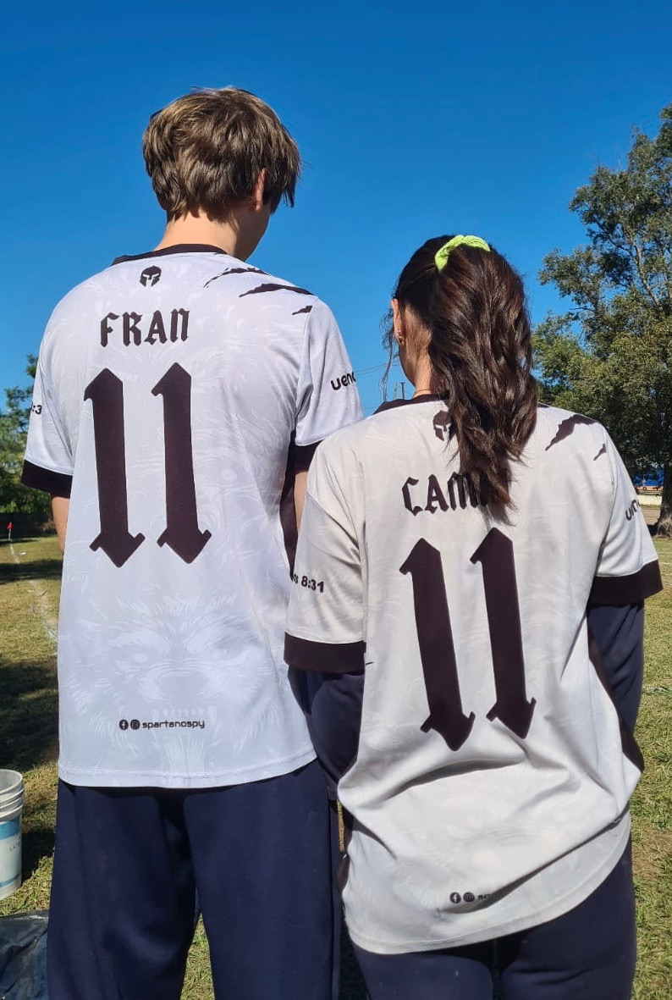

No sé cómo explicar todas las cosas que siento por ti, pero quiero que sepas algo: todavía me gustas muchísimo y, por más que haya pasado el tiempo, no pude olvidarte.
Te extraño más de lo que te imaginas. Extraño todas las veces que estábamos juntos, extraño tu sonrisa, tus abrazos, tus besitos y todas esas pequeñas cosas que antes parecían normales, pero por las que ahora daría muchísimo por volver a vivir.
No sé si algún día vamos a volver a estar juntos, pero una parte de mí sigue teniendo esa esperanza. Todavía espero que la vida nos dé otra oportunidad, que podamos volver a intentarlo y que esta vez las cosas sean diferentes.
No quiero presionarte ni pedirte que vuelvas. Solamente quiero que sepas que mis sentimientos siguen acá y que, si algún día decidís volver, estaría muy feliz de tenerte nuevamente en mi vida.
Te quiero



No sé qué va a pasar en el futuro pero lo que sí sé, es que quiero que mi futuro sea a tu lado.
Ojalá la vida nos regale la oportunidad de seguir escribiendo nuestra historia, y que esta vez sea para toda la vida.